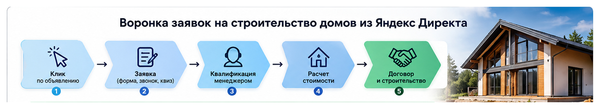

Яндекс Директ
Яндекс Директ для строительства домов: как получать заявки
Яндекс Директ для строительства домов может давать стабильный поток заявок, но в этой нише недостаточно собрать ключевые фразы и запустить объявления. У клиента высокий чек, длинный срок принятия решения и много вопросов до заключения договора. Поэтому результат зависит от всей связки: реклама, предложение, сайт, аналитика и работа отдела продаж.
На практике я оцениваю такую рекламу не по количеству кликов и даже не только по стоимости заявки. Главный вопрос - сколько обращений оказываются целевыми и сколько из них доходят до расчета, встречи и договора.
Как работает Яндекс Директ в строительстве домов
Основные источники трафика - Поиск Яндекса и Рекламная сеть Яндекса. В Единой перфоманс-кампании Яндекс позволяет работать с Поиском, Картами и РСЯ, используя разные условия показа и автоматические стратегии.
На Поиске мы работаем с уже сформированным спросом. Человек сам вводит запросы вроде:
- строительство дома под ключ;
- построить дом на участке;
- строительство каркасного дома;
- дом из газобетона под ключ;
- строительство коттеджей;
- проекты домов с ценами.
В РСЯ сценарий другой. Пользователь может сейчас ничего не искать, но Яндекс определяет подходящую аудиторию по интересам, поведению, тематике посещаемых ресурсов и другим сигналам.
Подробнее принцип работы сетевой рекламы я разбирал отдельно: https://naklikay.ru/blog/chto-takoe-rsya-v-yandex-direct/
Для строительства домов обычно имеет смысл тестировать оба направления. Поиск перехватывает существующий спрос, а РСЯ позволяет расширять охват и повторно возвращать людей, которые уже выбирали подрядчика или смотрели проекты.
Сегментировать нужно не ради красивой структуры
Одна из типичных ошибок - смешать в одной рекламной логике все услуги строительной компании.
Например:
- каркасные дома;
- дома из газобетона;
- кирпичные дома;
- барнхаусы;
- готовые проекты;
- индивидуальное проектирование;
- строительство коробки;
- строительство под ключ.
Разделять их стоит тогда, когда различаются предложение, экономика или посадочная страница.
Если компания строит каркасные дома от одной суммы, а каменные дома относятся уже к другому ценовому сегменту, пользователю нужны разные аргументы. Объявление про каркасный дом должно приводить на страницу именно с каркасными домами, а не на общую страницу со всеми технологиями строительства.
При этом чрезмерно дробить аккаунт тоже не стоит. Современные алгоритмы Директа используют накопленные данные о конверсиях, поэтому десятки маленьких кампаний с несколькими заявками в каждой могут работать хуже более крупной структуры.
Какие запросы использовать для рекламы строительства домов
Я бы начинал с прямого коммерческого спроса и постепенно расширял семантику по статистике.
Основные группы запросов:
| Тип спроса | Примеры |
|---|---|
| Общий коммерческий | строительство домов, построить дом под ключ |
| По материалу | каркасный дом под ключ, дом из газобетона |
| По цене | стоимость строительства дома, цена дома под ключ |
| По проекту | проекты домов под строительство |
| По площади | строительство дома 100 м², дом 150 м² под ключ |
| По географии | строительство домов + нужный регион |
При этом не каждый запрос со словом «дом» является потенциальным клиентом.
Если компания продает строительство под ключ, обычно требуется контролировать запросы со словами вроде:
- своими руками;
- бесплатно;
- чертеж;
- скачать проект;
- инструкция;
- технология строительства самостоятельно;
- вакансии;
- работа;
- обучение.
Готовый огромный список минус-слов брать вслепую не стоит. Сначала исключаются очевидные нецелевые запросы, а после запуска список расширяется по фактическому отчету поисковых фраз.
Подробнее эту механику я описывал в материале про минус-фразы для Яндекс Директа:
https://naklikay.ru/blog/minus-frazy-yandex-direct/
Поиск или РСЯ для строительной компании
Я не считаю правильным заранее объявлять один источник трафика главным для всех строительных компаний.
На Поиске преимущество очевидно: пользователь прямо сейчас ищет подрядчика. Но конкуренция за такого человека может быть высокой.
РСЯ работает с более широкой аудиторией. Для домов это особенно интересно из-за длинного цикла выбора. Потенциальный заказчик может сначала посмотреть проекты, через несколько дней сравнить технологии, затем изучить несколько строительных компаний и только после этого оставить заявку.
Поэтому я отдельно тестирую:
- прямой поисковый спрос;
- аудитории РСЯ;
- ретаргетинг посетителей сайта;
- разные предложения и креативы;
- различные посадочные страницы.
После этого бюджет распределяется не по принципу «Поиск всегда лучше», а по фактической стоимости и качеству обращений.
Сайт влияет на рекламу не меньше настроек Директа
В строительстве человек редко принимает решение по одному заголовку объявления. После перехода он начинает проверять компанию.
На посадочной странице должны быстро находиться ответы на основные вопросы потенциального клиента:
- какие дома строит компания;
- в каких регионах работает;
- какие технологии использует;
- какие проекты уже построены;
- что входит в стоимость;
- какие есть варианты комплектации;
- как проходит строительство;
- какие сроки возможны;
- как получить расчет.
Цены, гарантии и сроки стоит указывать только те, которые компания реально может подтвердить.
Хорошо работают фотографии завершенных объектов, планировки, примеры проектов, понятное описание комплектаций и возможность запросить расчет конкретного дома.
Отдельный лендинг или страница направления обычно полезнее общей главной страницы, если на сайте собрано много разных услуг. О роли посадочной страницы подробнее написал в статье о лендингах для Яндекс Директа:
https://naklikay.ru/blog/lending-v-yandex-direct/
Квиз может помогать, но не должен маскировать цену лида
Для строительства домов квиз удобен, потому что позволяет еще до разговора получить часть информации:
- желаемую площадь;
- материал;
- наличие участка;
- бюджет;
- предполагаемые сроки строительства.
Но короткая форма или прохождение первого шага квиза сами по себе не являются качественной заявкой.
Это особенно существенно при использовании автоматических стратегий. Если оптимизировать кампанию по слишком легкому действию, алгоритм будет искать пользователей, которые хорошо выполняют именно это действие.
Что считать конверсией

Минимально я настраиваю отслеживание:
- отправок форм;
- звонков;
- заявок из квиза;
- других реальных способов обращения.
Дальше желательно соединять рекламные данные с CRM.
Для строительной компании гораздо полезнее видеть такую цепочку:
клик -> заявка -> квалифицированный лид -> расчет -> встреча -> договор
Яндекс Метрика поддерживает офлайн-конверсии. Благодаря этому действия, которые произошли уже после обращения с сайта, можно связать с рекламным визитом. Привязанные офлайн-конверсии также могут использоваться для оптимизации кампаний в Директе.
Например, вместо оценки двух кампаний только по CPL можно увидеть, что первая получила 20 дешевых заявок без дальнейших результатов, а вторая - меньше обращений, но именно из нее появились расчеты и договоры.
Поэтому в дорогих услугах я стараюсь постепенно смещать оценку рекламы ближе к реальному результату бизнеса.
Подробнее о связи CR, CPA и целей Метрики есть в отдельной статье:
https://naklikay.ru/blog/konversiya-v-yandex-direct/
Какую стратегию выбрать
В актуальном Яндекс Директе доступны автоматические стратегии, в том числе «Максимум конверсий». Она управляет ставками с учетом вероятности достижения выбранных целей и заданных ограничений.
Но выбор стратегии зависит от количества данных.
Если проект уже получает достаточно реальных заявок, можно оптимизироваться по конверсиям. Если статистики практически нет, слишком жесткая целевая стоимость заявки способна ограничить показы и не дать алгоритму собрать данные.
Я не ставлю минимальный CPA просто потому, что такую цифру хочет видеть бизнес. Сначала нужно понять фактическую стоимость трафика, конверсию посадочной страницы и допустимую стоимость привлечения клиента.
Отдельно выбор автоматических и ручных стратегий разобран здесь:
https://naklikay.ru/blog/strategiya-v-yandex-direct/
Реальный кейс Яндекс Директа в строительстве домов
У меня есть отдельный проект именно по этой тематике:
https://naklikay.ru/cases/house-construction-yandex-direct/
Проект запускался в сложный для рынка период, когда спрос и стоимость рекламного трафика менялись. В процессе работы удалось снизить CPA примерно в два раза.
Для меня этот кейс хорошо показывает особенность ниши: нельзя один раз собрать кампании и считать настройку законченной. При изменении спроса приходится пересматривать трафик, объявления, стратегии и распределение бюджета.
Что показывают другие мои кейсы из недвижимости
Схожие принципы работают и в других проектах с дорогим продуктом и длительным выбором.
В рекламе trade-in недвижимости старый многостраничный сайт плохо подходил для платного трафика. Мы оставили его для SEO, а рекламу направили на отдельный лендинг с квизом. В РСЯ удалось получать заявки примерно по 1500 рублей, а общий CPL держался около 1900 рублей.
Кейс агентства недвижимости по trade-in:
https://naklikay.ru/cases/real-estate-agency-trade-in-yandex-direct/
В проекте по коммерческим помещениям ЖК «Ватутинки Парк» исходная стоимость обращения составляла около 6000 рублей. После переработки воронки и рекламы она снизилась примерно до 1700 рублей, при этом 10 из 12 полученных за рассматриваемый период заявок были квалифицированными.
Кейс рекламы коммерческой недвижимости:
https://naklikay.ru/cases/vatutinki-park-commercial-real-estate-yandex-direct/
Эти проекты относятся к разным направлениям, но вывод один: качество посадочной страницы, правильная цель оптимизации и квалификация обращений могут влиять на экономику сильнее, чем попытка просто получить больше кликов.
Сколько нужно денег на Яндекс Директ для строительства домов
Универсального бюджета для этой ниши нет.
Стоимость зависит от:
- региона;
- технологии строительства;
- количества конкурентов;
- сезона;
- структуры спроса;
- стоимости клика;
- конверсии сайта;
- допустимого CPL;
- необходимого количества обращений.
Поэтому я не использую формулировки вроде «для строительства домов нужно минимум 100 000 рублей в месяц» без расчета конкретного проекта.
Сначала оценивается поисковый спрос и стоимость трафика. Затем прогноз переводится в клики, предполагаемые заявки и продажи.
У Яндекса есть инструмент предварительного прогноза поискового трафика. Сам по себе он не показывает будущую стоимость заявки, поэтому расчет нужно дополнять конверсией сайта и экономикой бизнеса.
Подробнее:
https://naklikay.ru/blog/prognoz-byudzheta-yandex-direct/
Что я проверяю после запуска
После появления статистики начинается основная работа.
Я смотрю:
- Какие поисковые запросы реально получили показы и клики.
- Какие категории автотаргетинга расходуют бюджет.
- Какие объявления дают обращения.
- Какие аудитории работают в РСЯ.
- Какие площадки приводят полезный трафик.
- Как конвертируются разные посадочные страницы.
- Сколько стоит заявка.
- Какое количество заявок проходит квалификацию.
- Какие источники приводят расчеты и продажи.
CTR и CPC здесь вспомогательные показатели. Кампания с более дорогим кликом может оказаться выгоднее, если эти переходы чаще превращаются в нормальные заявки.
Основные ошибки рекламы строительства домов
Чаще всего проблемы появляются еще до оптимизации ставок.
Одна страница для всех направлений
Пользователь ищет дом из газобетона, а попадает в каталог, где вперемешку каркасные дома, бани, ремонт и проектирование.
Слишком общий оффер
«Строим качественно и надежно» ничего не объясняет. Лучше показывать реальные особенности компании, комплектации, проекты, технологии и условия.
Оптимизация на легкие цели
Просмотр страницы или первый шаг квиза может давать красивую статистику, но не обязательно приводит к заказам.
Оценка рекламы только по CPL
Дешевая заявка может оказаться бесполезной. В строительстве нужно хотя бы отдельно считать квалифицированные обращения.
Отсутствие связи с отделом продаж
Без обратной связи невозможно понять, какие кампании приводят реальные запросы на строительство, а какие - людей без участка, бюджета или планов начинать работы.
Постоянные изменения кампании
Автоматическим стратегиям требуется статистика. Если каждый день менять бюджет, цели, структуру и ограничения, становится сложно понять, что именно повлияло на результат.
Как бы я запускал новый проект
Для новой строительной компании схема выглядела бы так:
- Разобрать направления строительства, географию и экономику.
- Определить допустимую стоимость целевой заявки.
- Подготовить страницы под основные направления.
- Настроить Метрику, формы, звонки и CRM.
- Запустить прямой коммерческий спрос и тест РСЯ.
- Собрать реальные данные по стоимости и качеству обращений.
- Передавать в аналитику более глубокие этапы воронки и масштабировать рабочие связки.
Общую актуальную механику запуска я подробно разобрал в инструкции:
https://naklikay.ru/blog/kak-nastroit-yandex-direct/
FAQ
Подходит ли Яндекс Директ для строительства частных домов?
Да. Через Директ можно работать как с людьми, которые уже ищут строительную компанию, так и с более широкой аудиторией в РСЯ. Эффективность нужно оценивать по заявкам, их качеству и последующим продажам.
Что лучше для строительства домов - Поиск или РСЯ?
Заранее определить победителя нельзя. Поиск работает со сформированным спросом, РСЯ позволяет расширять аудиторию и делать повторные касания. Решение стоит принимать после теста по фактической экономике.
Нужен ли отдельный лендинг?
Если рекламируется одно четкое направление, отдельная посадочная страница часто удобнее общего корпоративного сайта. Особенно когда основной сайт содержит много услуг и пользователь не сразу находит нужное предложение.
Можно ли рекламировать несколько технологий строительства одновременно?
Можно. Но каркасные, газобетонные, кирпичные и другие дома желательно разделять по смыслу, если у них различаются аудитория, цена, преимущества или посадочные страницы.
Какая нормальная стоимость заявки на строительство дома?
Универсальной цифры нет. Стоимость зависит от региона, конкуренции, продукта, сезона, сайта и качества трафика. Правильнее считать допустимый CPL из экономики конкретной компании.
Вывод
Яндекс Директ для строительства домов лучше рассматривать как систему привлечения клиентов, а не отдельный рекламный кабинет. Результат появляется, когда запрос пользователя совпадает с объявлением и страницей, Метрика фиксирует реальные обращения, а данные отдела продаж возвращаются в аналитику.
В моем собственном кейсе по строительству домов работа с этой системой позволила снизить CPA примерно в два раза. Другие проекты в недвижимости также показывают, насколько сильно на итоговую стоимость обращения влияют посадочная страница, воронка и качество данных.
Информацию о моем подходе к настройке и ведению рекламы и другие кейсы можно посмотреть на основной странице: